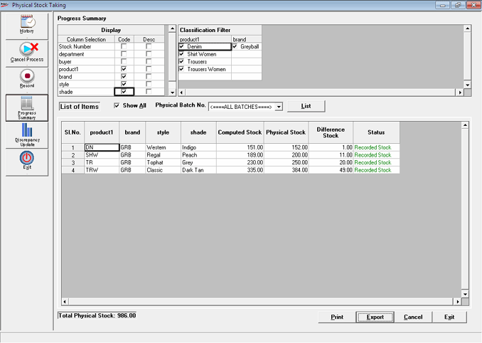

This option provides the Information of the current physical stock taking in process. Reports can be generated based on the Physical Stock Taking Scope defined.

Display: Reports are generated based on the Code and/ or Description of the criteria selected such as Stock No., Super Classification 1, Super Classification 2, Classification 1, Classification 2, Sub Classification 1, Sub Classification 2 or UOM / Size / Pack
Classification Filter: Select the required items to be displayed in the report for each classification columns
List of Items
Show All: Check this box to list items belonging to all classifications under the defined Scope. If Show All is unchecked, then items get listed for the selected values in the Classification Filter.
Physical Batch No.: Select All Batches to generate physical stock taking report for all batch reference numbers at a time or select the specific batch reference. If a specific batch is chosen from the list, the physical stock column is split into Current Batch and Other Batches. This helps in differentiating the types of Physical Stock
The details displayed contain the information about the Status of the physical stock - Negative Stock, NonRecorded Stock and Recorded Stock.
Computed Stock column is displayed to view the total stock presently available for the item selected when the system parameter Display Computed Stock While Stock Recording under the category Physical Stock in the parameter is checked.
Cost Price & Selling Price is displayed if stock number is selected at Show and the system parameter Display Retail Price & Current Cost is set to YY under the category Physical Stock.
Print: Click to print the data. Select the destination to print the data from the Print Setup window.
Export: Click to export the data to Excel where the required analysis can be carried out. Once the data is successfully exported, a message is displayed. Click OK to proceed.